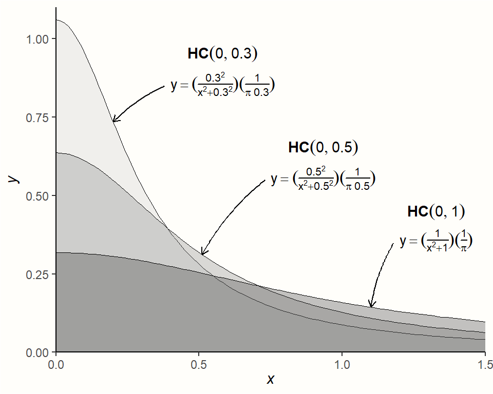
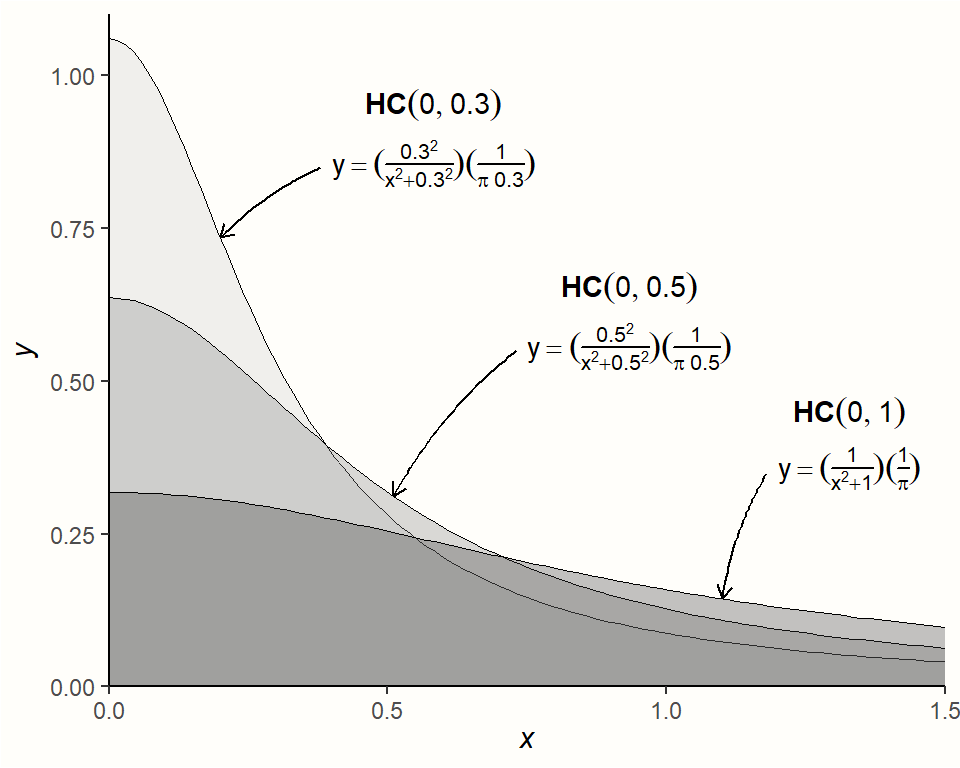
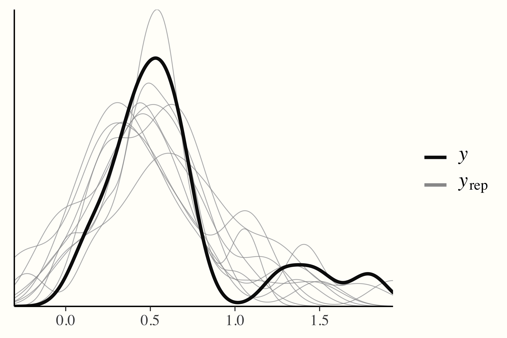
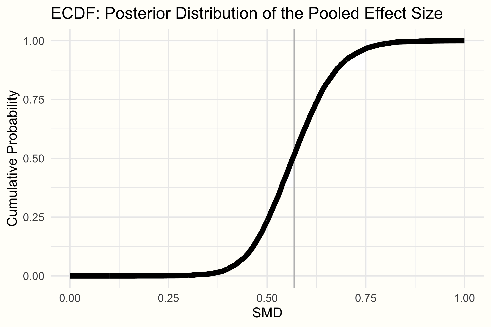

Warning: Using `size` aesthetic for lines was deprecated in ggplot2 3.4.0.
ℹ Please use `linewidth` instead.Warning: The `size` argument of `element_rect()` is deprecated as of ggplot2 3.4.0.
ℹ Please use the `linewidth` argument instead.
在 前面的章节中，我们深入探讨了元分析的一些更为复杂的扩展，例如“多层”模型（第 @ref(multilevel-ma) 章），元分析结构方程建模（第 @ref(sem) 章）和网络元分析（第 @ref(netwma) 章）。现在，我们将后退一步，再次回顾“传统”元分析——但这次是从另一个角度。在本章中，我们将讨论贝叶斯元分析。
在上一章关于网络元分析中，我们已经介绍了一个贝叶斯模型。在那里，我们讨论了贝叶斯统计背后的主要思想，包括贝叶斯定理和先验分布的概念（参见第 @ref(bayesian-inference) 章）。在本章中，我们将在这些知识的基础上，尝试更彻底地理解进行元分析的“贝叶斯方式”。例如，当我们建立贝叶斯网络元分析模型时，{gemtc} 程序包会自动为我们指定先验。在这里，我们将自己完成这项工作。
虽然其背景稍微复杂一些，但我们将看到，贝叶斯元分析本质上旨在完成与任何“传统”元分析相同的事情：它将观察到的效应量汇集到一个总体（真实）效应中。但是，与频率学派方法相比，使用贝叶斯模型还具有一些实际优势。这使得学习如何使用 R 实现此类模型是有价值的。
为了执行贝叶斯元分析，我们采用所谓的贝叶斯分层模型 [@rover2017bayesian; @higgins2009re]。我们已经在网络元分析章节（第 @ref(bayesian-net-ma-model) 章）中简要介绍了这种类型的模型。
在第 @ref(multilevel-ma) 章中，我们了解到每个元分析模型都具有固有的“多层”结构，因此也是分层结构。在第一层，我们有各个参与者。此级别的数据通常以每个研究 \(k\) 的计算效应量 \(\hat\theta_k\) 的形式到达我们手中。我们假设参与者嵌套在第二层的研究中，并且元分析中不同研究的真实效应量 \(\theta_k\) 遵循其自身分布。这种真实效应的分布具有均值 \(\mu\)（我们想要估计的汇集“真实”效应）和方差 \(\tau^2\)，表示研究间的异质性。
让我们尝试将此形式化。在第一层，我们假设研究 \(k\) 中报告的观察效应量 \(\hat\theta_k\) 是该研究中“真实”效应 \(\theta_k\) 的估计值。由于抽样误差 \(\epsilon_k\)，观察到的效应 \(\hat\theta_k\) 偏离 \(\theta_k\)。这是因为我们假设 \(\hat\theta_k\) 是从 \(k\) 的基础人群中抽取（采样）的。该人群可以被视为具有均值 \(\theta_k\)（研究的“真实”效应）和方差 \(\sigma^2\) 的分布。
在第二步中，我们假设真实效应量 \(\theta_k\) 本身只是真实效应量总体分布的样本。此分布的均值 \(\mu\) 是我们想要估计的汇集效应量。研究特定的真实效应 \(\theta_k\) 偏离 \(\mu\)，因为总体分布也具有方差 \(\tau^2\)，表示研究间的异质性。综上所述，这给出了以下两个方程：
\[\begin{align} \hat\theta_k &\sim \mathcal{N}(\theta_k,\sigma_k^2) \notag \\ \theta_k &\sim \mathcal{N}(\mu,\tau^2) (\#eq:by1) \end{align}\]
这里，我们使用 \(\mathcal{N}\) 来表示左侧的参数是从正态分布中采样的。有些人可能会争辩说，对于第二个方程来说，这是一个不必要的严格假设 [@higgins2009re]，但如此处所示的公式是使用最多的公式。如前所述，固定效应模型只是该模型的一个特例，在该模型中，我们假设 \(\tau^2 = 0\)，这意味着不存在研究间的异质性，并且所有研究共享一个单一的真实效应量（即对于所有研究 \(k\)：\(\theta_k = \mu\)）。
我们还可以使用边际形式简化此公式：
\[\begin{equation} \hat\theta_k \sim \mathcal{N}(\mu,\sigma_k^2 + \tau^2) (\#eq:by2) \end{equation}\]
您可能已经发现这些公式看起来很像我们在讨论随机效应（第 @ref(rem) 章）和三层元分析（第 @ref(multilevel-nature) 章）模型时定义的公式。的确，这种公式化并没有什么特别的“贝叶斯”之处。但是，当我们添加以下公式时，情况会发生变化 [@williams2018bayesian]：
\[\begin{align} (\mu, \tau^2) &\sim p(.) \notag \\ \tau^2 &> 0 (\#eq:by3) \end{align}\]
第一行尤为重要。它定义了参数 \(\mu\) 和 \(\tau^2\) 的先验分布。这使我们能够先验地指定我们认为真实汇集效应量 \(\mu\) 和研究间异质性 \(\tau^2\) 可能看起来如何，以及我们对此有多确定。第二个方程添加了研究间异质性方差必须大于零的约束。但是，此公式未指定用于 \(\mu\) 和 \(\tau^2\) 的先验分布的确切类型。它仅告诉我们假设了某些先验分布。稍后，我们将更详细地介绍贝叶斯元分析模型合理的特定先验。
在关于网络元分析的章节中，我们已经介绍了贝叶斯方法估计模型参数的方法。概括地说，这涉及使用基于 马尔可夫链蒙特卡洛 的抽样程序，例如 吉布斯抽样。在我们将在本章中使用的 {brms} 程序包中，使用了所谓的 无 U 形转弯 抽样 [NUTS, @hoffman2014no]1。
在前面的章节中，我们主要使用了 {meta} 和 {metafor} 程序包。这些程序包允许基于非贝叶斯或 频率学派 框架进行元分析。因此，您可能想知道，鉴于我们已经可以使用“传统”方法求助于如此强大的工具，为什么还要开始使用贝叶斯方法。原因是贝叶斯元分析具有一些独特的优势 [@williams2018bayesian; @mcneish2016using; @chung2013nondegenerate]：
贝叶斯方法允许直接对我们对 \(\tau^2\) 的估计中的不确定性进行建模。它们在估计汇集效应方面也可能更出色，尤其是在包含的研究数量较少时（这在实践中非常常见）。
贝叶斯方法为 \(\mu\) 和 \(\tau^2\) 生成完整的后验分布。这允许计算 \(\mu\) 或 \(\tau^2\) 小于或大于某个指定值的确切概率。这与频率学派方法形成对比，在频率学派方法中，我们仅计算置信区间。但是，（95%）置信区间仅说明，如果数据抽样重复多次，人口参数（例如 \(\mu\) 或 \(\tau^2\)）的真实值将在 95% 的样本中落入置信区间的范围内。它们没有告诉我们真实参数位于两个指定值之间的概率。
贝叶斯方法允许我们在计算元分析时整合先验知识和假设。
之前，我们形式化了可用于在贝叶斯元分析中汇集效应的分层模型。但是，要运行这样的模型，我们必须指定 \(\mu\) 和 \(\tau^2\) 的先验分布。尤其是在研究数量较少时，先验会对结果产生相当大的影响，因此我们应明智地选择它们。
通常，一个好的方法是使用弱信息先验 [@williams2018bayesian]。弱信息先验可以与无信息先验形成对比。无信息先验是先验分布的最简单形式。它们通常基于均匀分布，并用于表示所有值都同样可信。
另一方面，弱信息先验稍微复杂一些。它们依赖于表示我们微弱相信某些值比其他值更可信的分布。但是，它们仍然没有对要从我们的数据中估计的参数的值做出任何具体陈述。
从直觉上讲，这很有意义。例如，在许多元分析中，假设真实效应位于 SMD = -2.0 和 2.0 之间的某个位置似乎是合理的，但不太可能是 SMD = 50。基于此理由，我们的 \(\mu\) 先验的一个很好的起点可能是均值为 0 且方差为 1 的正态分布。这意味着我们授予大约 95% 的先验概率，即真实汇集效应量 \(\mu\) 位于 −2.0 和 2.0 之间：
\[\begin{equation} \mu \sim \mathcal{N}(0,1) (\#eq:by4) \end{equation}\]
我们必须指定的下一个先验是 \(\tau^2\) 的先验。这有点困难，因为我们知道 \(\tau^2\) 应始终为非负数，但可以（接近）零。在这种情况下，推荐的分布，并且通常用于方差（例如 \(\tau^2\)）的分布是 半柯西 先验。半柯西分布是柯西分布的一个特例，它仅为分布的“一半”（即正侧）定义2。
半柯西分布由两个参数控制。第一个是位置参数 \(x_0\)，它指定分布的峰值。第二个是 \(s\)，即比例参数。它控制分布的重尾程度（即它“扩展”到更高值的程度）。半柯西分布用 \(\mathcal{HC}(x_0,s)\) 表示。
下图可视化了 \(s\) 的不同值的半柯西分布，其中 \(x_0\) 的值固定为 0。
Warning: Using `size` aesthetic for lines was deprecated in ggplot2 3.4.0.
ℹ Please use `linewidth` instead.Warning: The `size` argument of `element_rect()` is deprecated as of ggplot2 3.4.0.
ℹ Please use the `linewidth` argument instead.
半柯西分布通常具有相当重的尾部，这使其特别适合用作 \(\tau\) 的先验分布。重尾确保我们仍然给予 \(\tau\) 的非常高的值一些概率，同时假设较低的值更可能。
在许多元分析中，\(\tau\)（\(\tau^2\) 的平方根）位于 0.3 附近，或者至少在同一范围内。要指定半柯西先验，我们可以因此使用 \(s=\) 0.3。这确保小于 \(\tau=\) 0.3 的值具有 50% 的概率 [@williams2018bayesian]。我们可以使用 {extraDistr} 程序包 [@extradistr] 的 phcauchy 函数中实现的半柯西分布函数来确认这一点。
library(extraDistr)
phcauchy(0.3, sigma = 0.3)[1] 0.5但是，这已经是关于 \(\tau\) 的真实值的一个非常具体的假设。一种更保守的方法（我们将在我们的实践示例中遵循）是将 \(s\) 设置为 0.5；这使分布更平坦。通常，建议始终使用不同的先验规范进行敏感性分析，以检查它们是否会显着影响结果。使用 \(s=\) 0.5 作为半柯西分布的参数，我们可以像这样写下我们的 \(\tau\) 先验：
\[\begin{equation} \tau \sim \mathcal{HC}(0,0.5) (\#eq:by5) \end{equation}\]
我们现在可以将分层模型的公式和我们的先验规范放在一起。这导致了我们可以用于贝叶斯元分析的完整模型：
\[\begin{align} \hat\theta_k &\sim \mathcal{N}(\theta_k,\sigma_k^2) \notag \\ \theta_k &\sim \mathcal{N}(\mu,\tau^2) \notag \\ \mu &\sim \mathcal{N}(0,1) \notag \\ \tau &\sim \mathcal{HC}(0,0.5) (\#eq:by5) \end{align}\]
现在我们已经定义了元分析的贝叶斯模型，现在是在 R 中实现它的时间了。在这里，我们使用 {brms} 程序包 [@burknerJSS; @burkner2017advanced] 来拟合我们的模型。{brms} 程序包是一个非常通用且强大的工具，用于拟合贝叶斯回归模型。它可以用于广泛的应用，包括多层（混合效应）模型、广义线性模型、多元模型和广义可加模型，仅举几例。这些模型中的大多数都需要个人级别的数据，但 {brms} 也可以用于元分析，在元分析中，我们处理（加权）研究级别的数据3。
在我们开始拟合模型之前，我们首先必须安装并加载 {brms} 程序包。
library(brms)在我们的实践示例中，我们再次使用 ThirdWave 数据集，该数据集包含来自一项元分析的信息，该元分析调查了大学生中“第三波”心理疗法的效果（第 @ref(pre-calculated-es) 章）。在我们拟合模型之前，让我们首先指定总体效应量 \(\mu\) 和研究间异质性 \(\tau\) 的先验分布。之前，我们定义了 \(\mu \sim \mathcal{N}(0,1)\) 和 \(\tau \sim \mathcal{HC}(0,0.5)\)。
我们可以使用 prior 函数来指定分布。该函数接受两个参数。在第一个参数中，我们指定要为先验假设的分布，包括分布参数。在第二个参数中，我们必须定义先验的 class。对于 \(\mu\)，合适的类是 Intercept，因为它是一个固定的总体级别效应。对于 \(\tau\)，类是 sd，因为它是一个方差（或者，更准确地说，是一个标准差）。我们可以使用 prior 函数定义这两个先验，然后将它们连接起来，并将结果对象另存为 priors。
priors <- c(prior(normal(0,1), class = Intercept),
prior(cauchy(0,0.5), class = sd))现在，我们可以继续并拟合模型。为此，我们使用 {brms} 中的 brm 函数。该函数有很多参数，但只有少数与我们相关。
在 formula 参数中，指定了模型的公式。{brms} 程序包使用回归公式表示法，其中一个结果（在我们的例子中，是观察到的效应量）y 由一个或多个预测变量 x 预测。波浪号 (~) 用于指定存在预测关系：y ~ x。
元分析有点特殊，因为我们没有预测效应量的变量（除非我们执行元回归）。这意味着 x 必须替换为 1，表示仅截距模型。此外，我们不能简单地按原样使用 y 中每个研究的效应量。我们还必须给具有更高精度（即样本量）的研究更大的权重。这可以通过使用 y|se(se_y) 而不是仅使用 y 来完成，其中 se(se_y) 部分代表我们数据集中每个效应量 y 的标准误差。
如果我们想使用随机效应模型，最后一步是将随机效应项 (1|study) 添加到公式的右侧。这指定了 y 中的效应量被假定为嵌套在研究中，这些研究的真实效应本身是从真实效应的总体分布中随机抽取的。如果我们想使用固定效应模型，我们可以简单地省略此项。因此，随机效应模型的通用完整公式如下所示：y|se(se_y) ~ 1 + (1|random)。要了解有关 brm 模型中公式设置的更多信息，可以在控制台中键入 ?brmsformula 以打开文档。
其他参数相当简单。在 prior 中，我们指定要为模型定义的先验。在我们的示例中，我们可以简单地插入我们之前创建的 priors 对象。iter 参数指定 MCMC 算法的迭代次数。您的模型越复杂，此数字就应该越高。但是，更多的迭代也意味着该函数将花费更长的时间才能完成。最后，我们还必须指定 data，我们在其中简单地提供数据集的名称。
我们将拟合的贝叶斯元分析模型以名称 m.brm 保存。代码如下所示：
m.brm <- brm(TE|se(seTE) ~ 1 + (1|Author),
data = ThirdWave,
prior = priors,
iter = 4000)请注意，与我们之前介绍的标准元分析技术相比，贝叶斯方法的计算成本要高得多。因此，采样可能需要几分钟才能完成。
在我们开始分析结果之前，我们必须确保模型已收敛（即 MCMC 算法找到了最佳解决方案）。如果不是这种情况，则参数不可信，不应解释。非收敛在贝叶斯模型中经常发生，通常可以通过使用更多迭代次数 (iter) 重新运行模型来解决。为了评估我们模型的收敛性和整体有效性，我们应该始终做两件事。首先，检查参数估计的 \(\hat{R}\) 值，其次，进行后验预测检查。
\(\hat{R}\) 值表示我们在讨论贝叶斯网络元分析时已经介绍过的潜在尺度缩减因子 (PSRF)（第 @ref(bayesian-model-convergence) 章）。我们估计的 \(\hat{R}\) 值应小于 1.01。要检查这一点，我们可以生成 m.brm 对象的 summary。
summary(m.brm)## Family: gaussian
## Links: mu = identity; sigma = identity
## Formula: TE | se(seTE) ~ 1 + (1 | Author)
## Data: ThirdWave (Number of observations: 18)
## Samples: 4 chains, each with iter = 4000; warmup = 2000; thin = 1;
## total post-warmup samples = 8000
##
## Group-Level Effects:
## ~Author (Number of levels: 18)
## Estimate Est.Error l-95% CI u-95% CI Rhat Bulk_ESS
## sd(Intercept) 0.29 0.10 0.11 0.51 1.00 2086
##
## Population-Level Effects:
## Estimate Est.Error l-95% CI u-95% CI Rhat Bulk_ESS
## Intercept 0.57 0.09 0.39 0.76 1.00 3660
##
##
## [...]
##
## Samples were drawn using sampling(NUTS). For each parameter,
## Bulk_ESS and Tail_ESS are effective sample size measures,
## and Rhat is the potential scale reduction factor on split
## chains (at convergence, Rhat = 1).正如我们所看到的，两个参数的 Rhat 值均为 1，表示收敛。这意味着可以解释结果。
另一方面，在后验预测检查中，通过从后验预测分布中随机抽取来模拟数据，然后将其与观察到的数据进行比较。如果模型已收敛并且可以很好地捕获数据，我们可以预期复制的密度与观察到的数据的密度大致相似。可以使用 pp_check 函数的输出来轻松检查这一点。
pp_check(m.brm)
我们可以首先查看摘要输出中的 Group-Level Effects 来开始解释结果。本节保留给我们在公式中定义的随机效应。由于我们拟合了一个随机效应元分析模型，因此变量 ~Author（表示各个研究）已使用随机截距进行建模。正如我们之前描述的，这代表了我们对级别 2 的假设，即每个研究都有其自己的“真实”效应量，这些效应量是从真实效应的总体分布中抽取的。我们还看到我们的组级别效应有 18 个级别，与我们数据中的 \(K=\) 18 个研究相对应。
研究间异质性的估计值 sd(Intercept) 为 \(\tau=\) 0.29，因此与我们在设置先验时最初的“最佳猜测”非常相似。使用 ranef 函数，我们还可以提取每个研究的“真实”效应量与汇集效应的估计偏差：
ranef(m.brm)## $Author
## , , Intercept
## Estimate Est.Error Q2.5 Q97.5
## Call et al. 0.06836636 0.1991649 -0.327463365 0.47663987
## Cavanagh et al. -0.14151644 0.1767123 -0.510165576 0.18799272
## DanitzOrsillo 0.48091338 0.2829719 -0.003425284 1.08636421
## de Vibe et al. -0.31923470 0.1454819 -0.612269461 -0.03795683
## Frazier et al. -0.11388029 0.1497128 -0.417029387 0.17085917
## [...]我们可以解释的输出的下一部分是 Population-Level Effects。本节代表了我们建模的“固定”人口参数。在我们的例子中，这是 \(\mu\)，即我们元分析的总体效应量。
在输出中，我们看到估计值为 0.57 的（偏差校正的）SMD，其中 95% 的可信区间范围为 95%CrI：0.39−0.76。这表明在此元分析中研究的干预措施具有中等大小的总体效果。
因为这是一个贝叶斯模型，所以我们在这里没有找到任何 \(p\) 值。但我们的示例应该强调，即使不必诉诸经典显着性检验，我们也可以做出合理的推断。在贝叶斯中，但在频率学派元分析中，我们可以做的一件很棒的事情是概率性地对我们要估计的参数进行建模。贝叶斯模型不仅估计感兴趣的参数，还估计 \(\tau^2\) 和 \(\mu\) 的整个后验分布，我们可以很容易地访问它们。我们只需要使用 posterior_samples 函数。
post.samples <- posterior_samples(m.brm, c("^b", "^sd"))
names(post.samples)## [1] "b_Intercept" "sd_Author__Intercept"结果数据框包含两列：b_Intercept，汇集效应量的后验样本数据，以及 sd_Author_Intercept，研究间异质性 \(\tau\) 的数据。我们将列重命名为 smd 和 tau，以使名称更具信息性。
names(post.samples) <- c("smd", "tau")使用 post.samples 中的数据，我们现在可以生成后验分布的密度图。我们使用 {ggplot2} 程序包进行绘图。
ggplot(aes(x = smd), data = post.samples) +
geom_density(fill = "lightblue", # set the color
color = "lightblue", alpha = 0.7) +
geom_point(y = 0, # add point at mean
x = mean(post.samples$smd)) +
labs(x = expression(italic(SMD)),
y = element_blank()) +
theme_minimal()
ggplot(aes(x = tau), data = post.samples) +
geom_density(fill = "lightgreen", # set the color
color = "lightgreen", alpha = 0.7) +
geom_point(y = 0,
x = mean(post.samples$tau)) + # add point at mean
labs(x = expression(tau),
y = element_blank()) +
theme_minimal()

我们看到后验分布遵循单峰且大致正态分布，在 \(\mu\) 和 \(\tau\) 的估计值附近达到峰值。
贝叶斯方法为我们感兴趣的参数创建实际抽样分布这一事实意味着我们可以计算 \(\mu\) 或 \(\tau\) 大于或小于某个特定值的确切概率。假设我们在以前的文献中发现，如果干预措施的效果低于 SMD = 0.30，它们就不再有意义。因此，我们可以根据我们的模型计算出我们元分析中真实总体效应小于 SMD = 0.30 的概率。
这可以通过查看经验累积分布函数 (ECDF) 来完成。ECDF 允许我们选择一个特定值 \(X\)，并根据提供的数据返回某个值 \(x\) 小于 \(X\) 的概率。在我们的示例中，可以在下面看到 \(\mu\) 的后验分布的 ECDF。

我们可以使用 ecdf 函数在 _
NUTS 是所谓的 哈密顿蒙特卡洛 (HMC) 的扩展，后者是另一种类型的马尔可夫链蒙特卡洛方法。与其他方法（例如吉布斯抽样）相比，HMC 可以提供更有效的解决方案来估计分层模型 [例如用于元分析的模型，@betancourt2015hamiltonian]。HMC 和 NUTS 的简要描述可以在 Stan 参考手册 中找到（Stan 是 {brms} 基于的低级编程语言，请参见第 @ref(bayes-ma-R) 章）。↩︎
标准柯西分布本身是自由度 \(\text{d.f.}=1\) 的 \(t\) 分布的一个特例。↩︎
{brms} 程序包基于 Stan，这是一种用于贝叶斯建模的低级编程语言。Stan 项目有自己的、积极维护的在线论坛 (https://discourse.mc-stan.org/)，也可以在那里讨论与 {brms} 相关的问题。该论坛还有一个“元分析”标签，可用于过滤掉可能相关的线程。↩︎